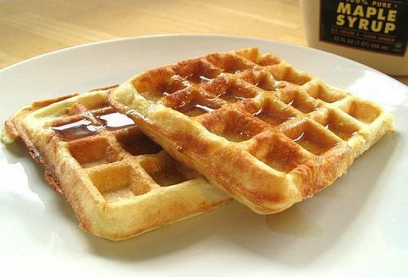

Wafle
 12
waflí
12
waflí 40
minut
40
minut Sladké
Sladké
 1079 kalorií
·
171 g cukru
·
508 g tuku
·
31 g proteinu
1079 kalorií
·
171 g cukru
·
508 g tuku
·
31 g proteinu
Tradiční recept na domácí wafle, perfektní pro snídani nebo jako pochoutka k odpolední kávě.

2 hrnkypolohrubé mouky1 lžičkakypřícího prášku do pečiva3 lžícecukru krystalu¼ hrnkuoleje1,½ hrnkumléka3ksvejce (žloutky a bílky odděleně)
Ingredience na těsto
2 hrnkypolohrubé mouky1 lžičkakypřícího prášku do pečiva3 lžícecukru krystalu¼ hrnkuoleje1,½ hrnkumléka3ksžloutků
Smícháme mouku, prášek, cukr, olej, mléko, a
3 žloutky.
3ksbílků
Z
bílkůuděláme tuhý sníh a ten opatrně přidáme do směsi.
Pečeme v předehřátém vaflovači podle potřeby.